Benchmarking
Benchmarking Platform for State-of-the-Art SII Imaging Algorithms
We present a benchmarking platform for the state-of-the-art algorithms for synthesis imaging by interferometry (SII) provided by BASPLib: uSARA, AIRI, and R2D2. We provide access to our simulated comprehensive testbed that is composed of 200 SII inverse problems, and offer detailed guidelines to reproduce the reconstruction results published in our study [1].
SII inverse problem
In radio interferometry, each pair of antennas acquires a noisy complex measurement corresponding to a spatial Fourier component of the target radio sky, at a given time instant. The collection of the sensed spatial Fourier modes accumulated over the total observation period forms the Fourier sampling pattern, describing an incomplete coverage of the 2D Fourier plane. Considering the unknown radio image of interest \({\boldsymbol{x}^{\star}} \in \mathbb{R}_{+}^{N},\) the SII data model reads: \[ {\boldsymbol{y}} = {\boldsymbol{\Phi} {\boldsymbol{x}^{\star}} + \boldsymbol{n}} \] where \({\boldsymbol{y}} \in \mathbb{C}^M\) denotes the data vector, \({\boldsymbol{n}} \in \mathbb{C}^M\) represents a complex Gaussian random noise with a standard deviation \(\tau>0\) and mean 0. The linear operator \({\boldsymbol{\Phi}}\colon \mathbb{R}^N \to \mathbb{C}^M\) is the measurement operator (i.e., describing the acquisition process), consisting in a nonuniform Fourier sampling. The operator \({\boldsymbol{\Phi}}\) can also include a data-weighting scheme to improve the observation's effective resolution.
The radio-interferometric data model can be expressed in the image domain via a normalised back-projection using the adjoint of the measurement operator \(\boldsymbol{\Phi}^\dagger \) such that: \[\boldsymbol{x}_{\textrm{d}} =\kappa \text{Re}\{\boldsymbol{\Phi}^\dagger \boldsymbol{y}\}= \kappa \text{Re}\{\boldsymbol{\Phi}^\dagger \boldsymbol{\Phi}\boldsymbol{x}^{\star}\}+ \kappa \text{Re}\{\boldsymbol{\Phi}^\dagger \boldsymbol{n}\}\] where \(\boldsymbol{x}_{\textrm{d}} \in \mathbb{R}^N\) stands for the back-projected data, known as the dirty image, and \(\textrm{Re}\{\cdot\}\) stands for the real part of its argument. In this equation, the normalization factor \(\kappa>0\) is equal to \(1/\max(\text{Re}\{{\boldsymbol{\Phi}}^{\dagger}{\boldsymbol{\Phi}}\boldsymbol{\delta}\})\), ensuring that the point spread function (PSF), defined as \(\kappa \text{Re}\{\boldsymbol{\Phi}^{\dagger}{\boldsymbol{\Phi}}\boldsymbol{\delta}\} \in \mathbb{R}^N\), has a peak value of 1. The Dirac \(\boldsymbol{\delta} \in \mathbb{R}^N\) is the image with value 1 at its center and 0 elsewhere.
SII testbed description
The testbed is composed of ground-truth images (in .fits format) and associated data files (in .mat format). The ground-truth images are derived from four real radio images, which underwent post-processing to eliminate artefacts such as deconvolution errors and noise, and endow them with high dynamic ranges.
The considered raw radio images are the giant radio galaxies 3C353 and M106, and the radio galaxy clusters A2034 and PSZ2G165.68+44.01, sourced from NRAO Archives and LOFAR surveys [2,3,4]. From each radio image, 50 curated ground-truth images of size 512\(\times\)512 were generated, characterised with large dynamic ranges varying in [103, 5\(\times\)105]. Simulated radio interferometric data associated with the ground-truth images are obtained from sampling patterns of the Very Large Array (VLA), generated under a wide variety of the observation settings, including total observation time, pointing direction, etc. Sampling patterns combining both VLA configurations A and C were considered for a balanced Fourier coverage. The total number of points in the resulting Fourier sampling patterns ranges from 0.2M to 2M. The data are corrupted with additive Gaussian noise with mean 0 and a standard deviation commensurate of the dynamic range of the corresponding ground truth images.
The simulated data are such that the spatial bandwidth of the Fourier sampling is fixed to 2/3 of the spatial Fourier bandwidth of the ground-truth images. Under these considerations, the testbed comprises 200 unique inverse problems. During imaging, the Briggs weighting scheme was applied to the data (also injected into the measurement operator) to enhance the effective resolution of the reconstructions, where the Briggs parameter was set to 0. To maintain consistency with the Fourier sampling spatial bandwidth, the pixel size was adjusted to ensure a super-resolution factor of 1.5.
Detailed information on the testbed can be found in [1]. The code utilised to generate a wide variety of sampling patterns and corresponding SII data is part of the utilities offered by BASPLib.
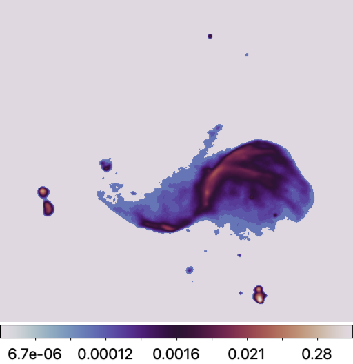
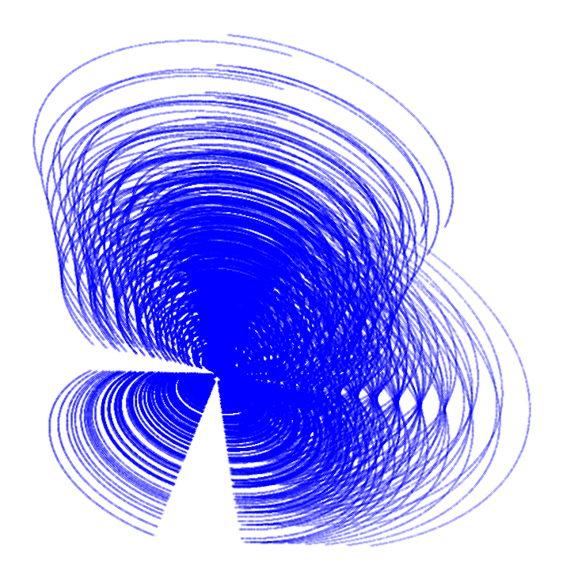
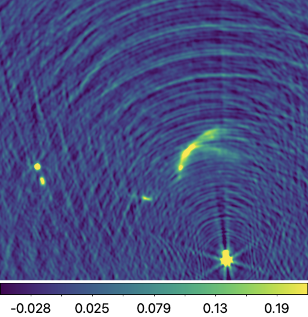
SII imaging algorithms
The BASPLib imaging algorithms used for benchmarking are:
uSARA: the unconstrained counterpart of the SARA algorithm [5,6]. It promotes a handcrafted sparsity-based regularisation, and is underpinned by the forward-backward algorithmic structure. The MATLAB implementation of uSARA for small-scale SII imaging is available in uSARA repository.
AIRI: a Plug-and-Play (PnP) algorithm at the intersection of optimisation theory and deep learning. By inserting carefully trained AIRI denoisers into the proximal splitting algorithms, one waives the computational complexity of optimisation algorithms induced by sophisticated image priors. AIRI is the PnP counterpart of uSARA. The MATLAB implementation of AIRI for small-scale SII imaging is available in AIRI repository.
R2D2: a novel paradigm for SII, interpreted as a learned version of the well-known Matching Pursuit algorithm [1,7]. R2D2 reconstruction is formed as a series of residual images, iteratively estimated as outputs of iteration-specific DNNs, each taking the previous iteration’s image estimate and associated back-projected data residual as inputs. The R2D2 algorithm comes in two incarnations. The first, dubbed R2D2 for simplicity, uses the well-known U-Net architecture for its DNNs. The second uses a more advanced architecture dubbed R2D2-Net, obtained by unrolling the R2D2 algorithm itself. In reference to its nesting structure, this second incarnation is referred to as R3D3. The Python implementation of both R2D2 and R3D3 are available in R2D2 repository.
U-Net: an end-to-end DNN, which also corresponds to the first term of the R2D2 DNN series.
R2D2-Net: an unrolled end-to-end DNN which unrolls the R2D2 algorithm itself. It also corresponds to the first term of the R3D3 DNN series.
In addition to BASPLib imaging algorithms, the benchmarking results also include the celebrated CLEAN algorithm. CLEAN, recognised as a standard algorithm for SII imaging, is represented here by its multiscale variant implemented in the widely used WSClean software [8].
Evaluation metrics
To assess the performance of the reconstruction algorithms, we use quantitative metrics described below.
Ground truth fidelity (SNR,logSNR)
The Signal-to-Noise Ratio (SNR) metric is defined as:
\[\text{SNR}(\boldsymbol{x}^{\star}, \boldsymbol{x}) =
20\log_{10}\left(\frac{\|\boldsymbol{x}^{\star}\|_{2}}{\|\boldsymbol{x}^{\star} - \boldsymbol{x}\|_{2}} \right), \]
where \(\boldsymbol{x}^{\star}\) stands for the ground truth, and \(\boldsymbol{x}\) denotes the reconstructed image.
The logSNR metric emphasises faint structures by applying a logarithmic mapping to the images, parametrised by the target dynamic range \(a\):
\[ \text{r}\log(\boldsymbol{x}) = x_{\text{max}} \log_{a} \left( \frac{x_{\text{max}}}{a} \cdot \boldsymbol{x} + 1 \right), \]
where \(x_{\text{max}}\) indicates the peak pixel value of the image \(\boldsymbol{x}\).
Using this mapping, the logSNR metric is defined as:
\[ \log\text{SNR}(\boldsymbol{x}^{\star}, \boldsymbol{x}) = \text{SNR}(\text{rlog}(\boldsymbol{x}^{\star}), \text{rlog}(\boldsymbol{x})). \]
Image-domain data fidelity (σres)
Image-domain data fidelity is assessed using the estimated residual dirty image defined as
\(\mathbf{r}\)=\(\boldsymbol{x}_d - \kappa \text{Re}\{\boldsymbol{\Phi}^\dagger \boldsymbol{\Phi}\boldsymbol{x}\}\). The σres metric is defined as:
\[ \sigma_{\text{res}}(\mathbf{r}, {\boldsymbol{x}_d}) = \frac{\|\mathbf{r}\|_{2}}{\|\boldsymbol{x}_d\|_{2}} \]
Table of Results
The numerical reconstruction results obtained by state-of-the-art imaging algorithms are reported in the table below. The reconstruction quality is assessed using metrics such as SNR, logSNR, and σres. Computational performance is detailed in terms of the total number of iterations (I), the total reconstruction time (ttot), and the computational resources utilised, including the number of GPUs (ngpu) and CPU cores (ncpu). The reported values represent averages calculated over 200 inverse problems of the testbed. Information about the programming languages used in the implementation of the algorithms is also provided. Please note that reported timings depend on the machine used and are provided for reference only.
| Method | SNR ± std (dB) |
logSNR ± std (dB) |
σres. ± std (×1e-4) |
I | ttot. | ncpu | ngpu | Programming language |
|---|---|---|---|---|---|---|---|---|
| CLEAN | 13.6±3.6 | 10.3±3.5 | 5.1±5.2 | 9±1 | 65.9±18.8 | 1 | - | C++ |
| uSARA | 30.8±1.9 | 21.9±3.3 | 6.5±8.2 | 1103±373 | 4184.2±1548.9 | 1 | - | MATLAB |
| AIRI | 31.3±2.3 | 21.9±4.4 | 6.4±8.0 | 5000±0.0 | 3478.8±1531.4 | 1 | 1 | MATLAB |
| U-Net | 20.5±2.7 | 6.6±3.3 | 777.6±467.4 | 1 | 1.1±0.1 | - | 1 | Python |
| R2D2-Net | 33.7±1.7 | 24.0±4.7 | 9.3±7.0 | 1 | 1.1±0.1 | - | 1 | Python |
| R2D2 | 33.7±1.5 | 25.0±4.9 | 13.5±46.9 | 15 | 2.9±0.3 | - | 1 | Python |
| R3D3 | 34.0±1.6 | 25.3±4.7 | 7.9±7.8 | 8 | 2.2±0.3 | - | 1 | Python |
Reconstructions & Residual dirty images
Reconstruction images obtained by the SII algorithms associated with one inverse problem selected from our testbed (ID:80009) are displayed below. In this case, the ground truth is characterised by a dynamic range of 150,000.
Estimated model images:
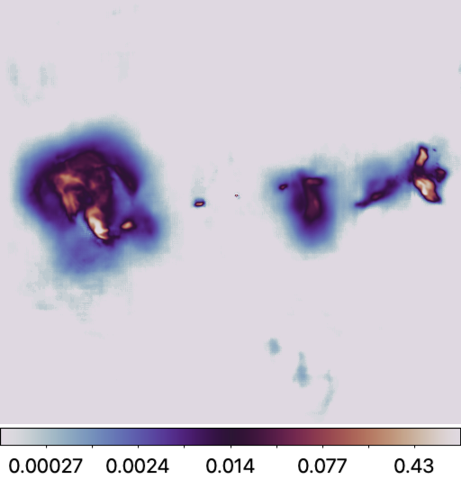
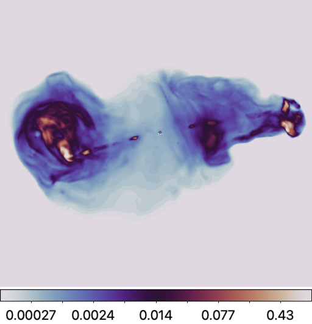
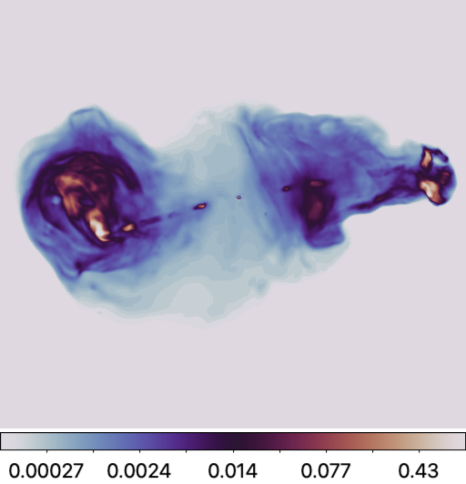
Residual dirty images:
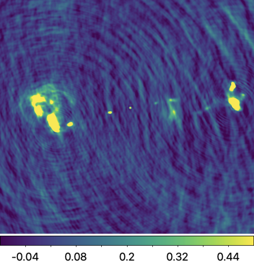
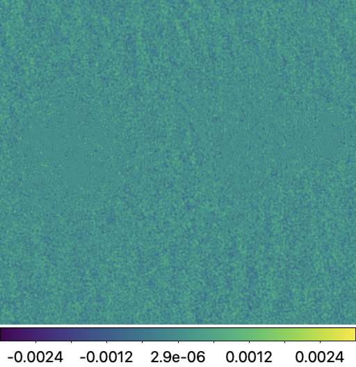
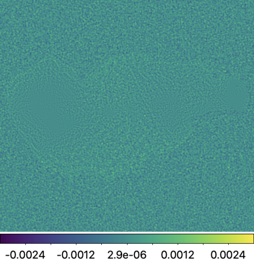
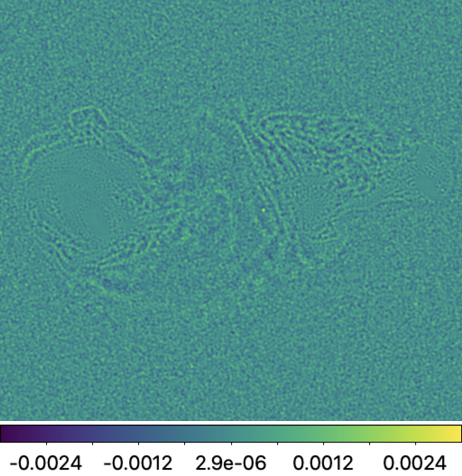
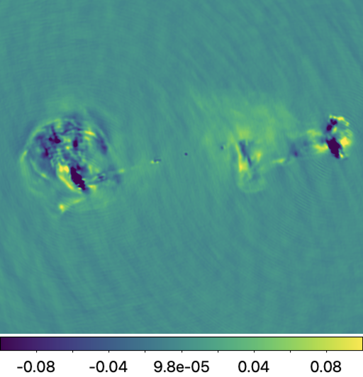
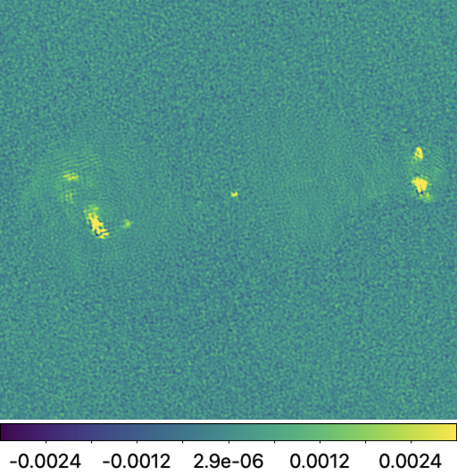
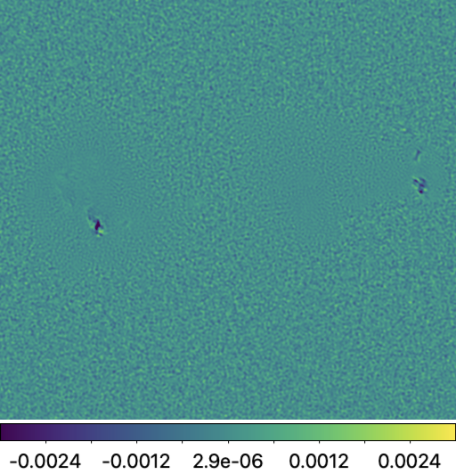
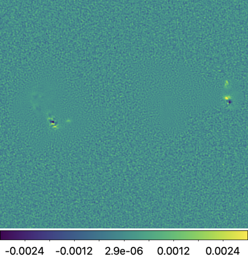
How to Use the Benchmarking Platform
In what follows, we provide instructions to reproduce the results summarised in the above table.
Setup
Setting up the main directory
Firstly, set up the main directory, which will comprise the benchmark testbed, SII imaging repositories, and pre-trained DNNs (for AIRI and R2D2). Replace
/path/to/your/directory with your local path. Subdirectories will be created accordingly.
main_dir=/path/to/your/directory cd $main_dir mkdir -p $main_dir/data # subdirectory for testbed
Downloading testbed
Secondly, download the testbed zip files. These correspond to compressed ground truth files in .fits and data files in .mat format.
# ground truth images wget -O "$main_dir/data/gdth.tar.gz" \ "https://www.dropbox.com/scl/fi/85cvbvixc791nnrnxtmbm/gdth.tar.gz?rlkey=dvcp8fqn7y5b8l92yxpkamovp&dl=0" # measurement data wget -O $main_dir/data/data.tar.gz \ "https://www.dropbox.com/scl/fi/99k57j0ciflcowmds6jqh/data.tar.gz?rlkey=2b087pqoyijiulb3dl3nmeblt&dl=0" \
Thirdly, extract the compressed files in the dedicated subdirectory.
tar -xzf $main_dir/data/gdth.tar.gz -C $main_dir/data/ tar -xzf $main_dir/data/data.tar.gz -C $main_dir/data/
You can access each inverse problem details via this Excel file.
Setting up imaging algorithms repositories
uSARA
Clone the repository to the current directory by running the command below.
git clone --recurse-submodules https://github.com/basp-group/uSARA.git cd ./uSARA
The --recurse-submodules flag is required so that the required sub-modules RI-measurement-operator will be cloned at the same time.
Dependencies
To run this repository, your MATLAB version should be higher than R2019b. The code below will check whether the required toolboxes have been installed.
list_tb = matlab.addons.installedAddons().Name; if ~ismember(list_tb, "Parallel Computing Toolbox") error("Please install Parallel Computing Toolbox!\n") elseif ~ismember(list_tb, "Wavelet Toolbox") error("Please install Wavelet Toolbox!\n") else fprintf("All set!\n") end
If you need to install corresponding toolboxes, you can go to the "HOME" tab of MATLAB. Then in "Add-Ons", click "Get Add-Ons".
AIRI
Clone the repository to the current directory by running the command below.
git clone --recurse-submodules https://github.com/basp-group/AIRI.git cd ./AIRI
The --recurse-submodules flag is required so that the required sub-modules RI-measurement-operator will be cloned at the same time.
Dependencies
To run this repository, your MATLAB version should be higher than R2019b. The scripts below will check whether the required toolboxes have been installed or not.
list_tb = matlab.addons.installedAddons().Name; if ~ismember(list_tb, "Parallel Computing Toolbox") error("Please install Parallel Computing Toolbox!\n") elif ~ismember(list_tb, "Deep Learning Toolbox") error("Please install Deep Learning Toolbox!\n") elif ~ismember(list_tb, "Deep Learning Toolbox Converter for ONNX Model Format") error("Please install Deep Learning Toolbox Converter for ONNX Model Format\n") else fprintf("All set!\n") end
If you need to install corresponding toolboxes, you can go to the "HOME" tab of MATLAB. Then in "Add-Ons", click "Get Add-Ons".
Pre-trained AIRI denoisers
Pre-trained AIRI denoisers are in .onnx format. From main AIRI directory run commands below to download the denoiser shelf compressed in a .tar.gz file, and extract the DNNs in the appropriate subdirectory.
wget -O ./airi_denoisers/airi_mix_denoisers.tar.gz \ "https://www.dropbox.com/scl/fi/4grlzujhpyovzbn4hm3nd/airi_mix_denoisers.tar.gz?rlkey=ej1k48faisni14fs04tgbddyi&dl=0" # extract the files tar -xzf ./airi_denoisers/airi_mix_denoisers.tar.gz -C ./airi_denoisers/ # Remove the zip file rm ./airi_denoisers/airi_mix_denoisers.tar.gz
Two additional collections of pre-trained AIRI denoisers are available [9]. While they are not required for this benchmarking, they can be utilized if needed.
wget -O ./airi_denoisers/v1_airi_astro-based_oaid_shelf.zip \ "https://researchportal.hw.ac.uk/files/115109618/v1_airi_astro-based_oaid_shelf.zip" wget -O ./airi_denoisers/v1_airi_mri-based_mrid_shelf.zip \ "https://researchportal.hw.ac.uk/files/115109619/v1_airi_mri-based_mrid_shelf.zip" # extract the files unzip "./airi_denoisers/v1_airi_astro-based_oaid_shelf.zip" -d "./airi_denoisers/" unzip "./airi_denoisers/v1_airi_mri-based_mrid_shelf.zip" -d "./airi_denoisers" # Remove the zip file rm ./airi_denoisers/v1_airi_astro-based_oaid_shelf.zip rm ./airi_denoisers/v1_airi_mri-based_mrid_shelf.zip
R2D2
The R2D2 repository encompasses the R2D2 variants: R2D2, R3D3, and R2D2-Net, and U-Net. The algorithm of choice is selected from the input parameters of the imager.
The currently available R2D2 models are trained specifically for the imaging settings considered in [1].
Deviating from these settings may result in sub-optimal results.
First clone the repository.
git clone https://github.com/basp-group/R2D2-SII cd ./R2D2-SII
Download the pretrained R2D2 models.
r2d2_ckpt_path=./ckpt/R2D2/ mkdir -p $r2d2_ckpt_path wget https://researchportal.hw.ac.uk/files/110702953/v1_R2D2_15UNets.zip -P $r2d2_ckpt_path # pre-trained model for R2D2 # Extract the files unzip $r2d2_ckpt_path/v1_R2D2_15UNets.zip -d $r2d2_ckpt_path # Remove the zip file rm $r2d2_ckpt_path/v1_R2D2_15UNets.zip
Download the pretrained R3D3 models.
r2d2_ckpt_path=./ckpt/R3D3/ mkdir -p $r2d2_ckpt_path # pre-trained model for R3D3 6 layers wget https://researchportal.hw.ac.uk/files/107306212/R3D3_8R2D2Nets_6UNetLayers.zip -P $r2d2_ckpt_path # Extract the files unzip $r2d2_ckpt_path/R3D3_8R2D2Nets_6UNetLayers.zip -d $r2d2_ckpt_path # Remove the zip file rm $r2d2_ckpt_path/R3D3_8R2D2Nets_6UNetLayers.zip
Note: Due to the large size of the R3D3 checkpoints, you may encounter the following error: "error: invalid zip file with overlapped components (possible zip bomb)" while trying to unzip them. To resolve this, please use the command below to unzip each checkpoint individually.
for i in {1..8}; do unzip -j $r2d2_ckpt_path/R3D3_8R2D2Nets_6UNetLayers.zip R3D3_R2D2Net_6Layers_N${i}.ckpt -d $r2d2_ckpt_path; done
Python environment
Firstly, create your Python environment using either venv or conda, with Python
version >= 3.10.0. In this tutorial, we will be using venv and pip.
python3 -m venv $main_dir/basplib
Secondly, activate this new environment.
source $main_dir/basplib/bin/activate
The R2D2 repository is Pytorch-based for accelerated computation on GPU. To ensure
compatibility of your CUDA driver version, follow PyTorch instruction.
If your CUDA version is older than what is displayed, please refer to
here for the newest PyTorch version compatible for your GPU.
Thirdly, once PyTorch is installed, install the remaining dependencies.
pip install -r $main_dir/R2D2-SII/requirements.txt
CLEAN
We use the multi-scale variant of CLEAN in WSClean. Please refer to WSClean official website for full instructions on how to install the software.
Imaging
Instructions to run BASPLib SII imaging algorithms and WSClean are outlined.
We recall the imaging settings are as follows: (i) the target image is of size 512x512 pixels, with
(ii) a pixel size corresponding to super-resolution factor of 1.5, and
(iii) Briggs weighting with parameter of 0 is applied to the data.
All algorithms take as input a configuration file in either JSON (for uSARA and AIRI)
or YAML format (for U-Net and R2D2 variants: R2D2, R3D3, and R2D2-Net).
Below are example Bash scripts designed to image all inverse problems at once.
Users are encouraged to customize these scripts to suit the specifications of their local machines as needed.
uSARA
For uSARA imaging algorithm, all inverse problems were solved with fixed parameters.
For best results, specifically the regularisation parameter was set to two times its heuristic value.
You can access sample config file for uSARA in usara_sim.json.
uSARA imager can be run by calling:
#!/bin/bash # Define variables data_files="/path/to/data/folder" output_path="/path/to/save/outputs/" config_path="/path/to/airi/config/file/usara_sim.json" imDimx=512 imDimy=512 runID=0 log_file="/path/to/save/log/file/" # Log the start time echo "Script started at: $(date)" # Loop through each .mat file in the directory for data_file in "$data_files"/*.mat; do # Extract the file name without extension for srcName and groundtruth baseName=$(basename "$data_file" .mat) srcName="$baseName" groundtruth="/path/to/Ground/truth/folder/${baseName}_gdth.fits" echo "Processing file: $data_file" | tee -a "$log_file" # Run the MATLAB command for each .mat file matlab -batch "run_imager('$config_path', 'srcName', '$srcName', 'dataFile', '$data_file', \ 'resultPath', '$output_path', 'imDimx', $imDimx, 'imDimy', $imDimy, \ 'groundtruth', '$groundtruth', 'runID', $runID); exit" 2>&1 | tee -a "$log_file" # Log the completion of each file echo "Finished processing file: $data_file" | tee -a "$log_file" done # Log the end time echo "Script completed at: $(date)" | tee -a "$log_file"
AIRI
The AIRI parameter was fixed to the heuristic value for all RI data, except for those simulated from the
radio image of 3C353, where 3 times the heuristic value was used.
You can access sample config files for AIRI in
airi_sim.json and
airi_sim_3c353.json.
AIRI imager can be run by calling:
#!/bin/bash # Define variables data_files="/path/to/data/folder" output_path="/path/to/save/outputs/" config_path="/path/to/airi/config/file/airi_sim.json" imDimx=512 imDimy=512 runID=0 dnn_shelf_path="/path/to/shelf.csv" # Log the start time echo "Script started at: $(date)" # Loop through each .mat file in the directory for data_file in "$data_files"/*.mat; do # Extract the file name without extension for srcName and groundtruth baseName=$(basename "$data_file" .mat) srcName="$baseName" groundtruth="/path/to/Ground/truth/folder/${baseName}_gdth.fits" echo "Processing file: $data_file" # Run the MATLAB command for each .mat file matlab -batch "run_imager('$config_path', 'srcName', '$srcName', 'dataFile', '$data_file', \ 'resultPath', '$output_path', 'imDimx', $imDimx, 'imDimy', $imDimy, 'dnnShelfPath', '$dnn_shelf_path', \ 'groundtruth', '$groundtruth', 'runID', $runID); exit" # Log the completion of each file echo "Finished processing file: $data_file" done # Log the end time echo "Script completed at: $(date)"
R2D2
You can access sample config file for R2D2 in R2D2.yaml
and R3D3_6L.yaml.
The R2D2 imager can be run by calling:
#!/bin/bash # Define common variables output_path="/path/to/save/outputs/" data_folder="/path/to/data/folder" groundtruth="/path/to/GT/images" ckpt_path="" yaml_file="" num_iter="" series="" layers="" log_file="/path/to/save/log/file/" source $main_dir/basplib/bin/activate # Function to set parameters based on the series set_parameters() { case $1 in U-Net) yaml_file="/path/to/r2d2.yaml" ckpt_path="/path/to/r2D2/checkpoints" num_iter=1 series="R2D2" layers=1 ;; R2D2-Net) yaml_file="/path/to/R3D3_6L.yaml" ckpt_path="/path/to/R3D3/checkpoints" num_iter=1 series="R3D3" layers=6 ;; R2D2) yaml_file="/path/to/r2d2.yaml" ckpt_path="/path/to/R2D2/checkpoints" num_iter=15 series="R2D2" layers=1 ;; R3D3) yaml_file="/path/to/R3D3_6L.yaml" ckpt_path="/path/to/R3D3/checkpoints" num_iter=8 series="R3D3" layers=6 ;; *) echo "Unknown algorithm: $1" | tee -a "$log_file" exit 1 ;; esac } # Prompt the user for the algorithm name echo "Please enter the algorithm name (U-Net, R2D2-Net, R2D2, R3D3):" read algo_name # Validate the input if [[ -z "$algo_name" ]]; then echo "No algorithm name provided. Exiting." | tee -a "$log_file" exit 1 fi # Set parameters based on the user input set_parameters $algo_name # Iterate over all .mat files in the specified directory for data_file in "$data_folder"/*.mat; do # Extract the base name of the data file without the extension base_name=$(basename "$data_file" .mat) specific_output_path="$output_path/$base_name" mkdir -p "$specific_output_path" # The corresponding ground truth images path (optional) gdth_file="$groundtruth/${base_name}_gdth.fits" # Update the yaml file with the current file paths and parameters sed -i 's|ckpt_path:.*|ckpt_path: '$ckpt_path'|' $yaml_file sed -i 's|data_file:.*|data_file: '$data_file'|' $yaml_file sed -i 's|gdth_file:.*|gdth_file: '$gdth_file'|' $yaml_file sed -i 's|series:.*|series: '$series'|' $yaml_file sed -i 's|num_iter:.*|num_iter: '$num_iter'|' $yaml_file sed -i 's|layers:.*|layers: '$layers'|' $yaml_file sed -i 's|output_path:.*|output_path: '$specific_output_path'|' $yaml_file sed -i 's|res_on_gpu:.*|res_on_gpu: True|' $yaml_file # Run the Python script with the updated yaml file python3 src/imager.py --yaml_file "$yaml_file" 2>&1 | tee -a "$log_file" done
For running R2D2 imager save above bash script into a bash file like R2D2.sh, and run like:
bash R2D2.sh The script will prompt you to enter the algorithm name. For example, you can enter U-Net, R2D2-Net, R2D2, or R3D3. The script will then execute the corresponding configuration for the specified algorithm.
CLEAN
For CLEAN, specifically its multi-scale variant all inverse problems were solved with fixed parameters. WSClean imager can be run by calling:
#!/bin/bash # Define variables data_files="/path/to/ms_files/folder" output_path="/path/to/save/outputs/" msFile_detail_path="/path/to/meas_convert.csv" niter=2000000 briggs_factor=0 # Log the start time echo "Script started at: $(date)" # Loop through each .mat file in the directory for data_file in "$data_files"/*.mat; do base_name=$(basename "$data_file" .mat) echo "Processing file: $data_file" # Read cell_size from the CSV file based on the base_name cellsize=$(awk -F, -v filename="$base_name" 'NR > 1 && $1 == filename {print $3}' "$msFile_detail_path") # Check if cellsize is found if [ -z "$cellsize" ]; then echo "Error: No matching cell size found for $base_name in $msFile_detail_path" continue fi # Run the MATLAB command for each .mat file wsclean -size 512 512 -scale "$cellsize"asec -data-column DATA -padding 2 -weight briggs "$briggs_factor" \ -niter "$niter" -nwlayers 1 -j 1 -mem 0.2 -multiscale -gain 0.1 -mgain 0.8 -nmiter 0 -auto-mask 1.5 \ -auto-threshold 0.5 -name "$output_path"/wsclean-briggs"$briggs_factor"- "$data_file" # Log the completion of each file echo "Finished processing file: $data_file" done # Log the end time echo "Script completed at: $(date)"
Note: Additional information on how to convert the data files into a measurement set that is readable by WSClean will be provided soon.
Evaluation metrics calculation
The evaluation metrics can be calculated using this Python file. To run calculate_metrics.py you can use below bash script:
#!/bin/bash # Define variables DATA_FILE="/path/to/data/folder" EXCEL_SAVE_PATH="/path/to/save/metrics/AIRI.xlsx" GT_PATH="/path/to/ground/truth/images/folder" MODEL_OUTPUTS="/path/to/model/outputs/folder/" MODEL="R2D2" # or "R3D3" or "AIRI" or "uSARA" # Activate your virtual environment if needed source /path/to/your/virtualenv/bin/activate # Run the Python script python calculate_metrics.py --data_file "$DATA_FILE" --excel_save_path "$EXCEL_SAVE_PATH" --GT_path "$GT_PATH" --model_outputs "$MODEL_OUTPUTS" --model "$MODEL"
References
[1] Aghabiglou A, Chu CS, Dabbech A, Wiaux Y. The R2D2 deep neural network series paradigm for fast precision imaging in radio astronomy. ApJS, 273(1):3, 2024, | arXiv:2403.05452 | DOI:10.3847/1538-4365/ad46f5[2] Edler HW, de Gasperin F, Shimwell TW, Hardcastle MJ, Boselli A, Heesen V, McCall H, Bomans DJ, Brüggen M, Bulbul E, Chyży KT. ViCTORIA project: The LOFAR HBA Virgo Cluster Survey. Astronomy & Astrophysics. 2023 Aug 1;676:A24. | DOI:10.1051/0004-6361/202346458
[3] Shimwell TW, Hardcastle MJ, Tasse C, Best PN, Röttgering HJ, Williams WL, Botteon A, Drabent A, Mechev A, Shulevski A, van Weeren RJ. The LOFAR two-metre sky survey-V. Second data release. Astronomy & astrophysics. 2022 Mar 1;659:A1. | DOI:10.1051/0004-6361/202142484
[4] Botteon A, Shimwell TW, Cassano R, Cuciti V, Zhang X, Bruno L, Camillini L, Natale R, Jones A, Gastaldello F, Simionescu A. The Planck clusters in the LOFAR sky-I. LoTSS-DR2: new detections and sample overview. Astronomy & Astrophysics. 2022 Apr 1;660:A78. | DOI:10.1051/0004-6361/202143020
[5]Carrillo RE, McEwen JD, Wiaux Y. Sparsity Averaging Reweighted Analysis (SARA): a novel algorithm for radio-interferometric imaging. Monthly Notices of the Royal Astronomical Society. 2012 Oct 21;426(2):1223-34. | DOI:10.1111/j.1365-2966.2012.21605.x
[6] Onose A, Dabbech A, Wiaux Y. An accelerated splitting algorithm for radio-interferometric imaging: when natural and uniform weighting meet. Monthly Notices of the Royal Astronomical Society. 2017 Jul;469(1):938-49. | DOI:10.1093/mnras/stx755
[7] Dabbech A, Aghabiglou A, San Chu C, Wiaux Y. CLEANing Cygnus A deep and fast with R2D2. The Astrophysical Journal Letters. 2024 May 7;966(2):L34. | ArXiv:2309.03291 | DOI:10.3847/2041-8213/ad41df
[8] Offringa AR, Smirnov O. An optimized algorithm for multiscale wideband deconvolution of radio astronomical images. Monthly Notices of the Royal Astronomical Society. 2017 Oct;471(1):301-16. | DOI:10.1093/mnras/stx1547
[9] Terris M, Tang C, Jackson A, Wiaux Y. Plug-and-play imaging with model uncertainty quantification in radio astronomy. arXiv preprint arXiv:2312.07137. 2023 Dec 12.
Support
If you need assistance with setting up the BASPLib imaging algorithms or encounter any issues during installation, please don’t hesitate to contact our support team.